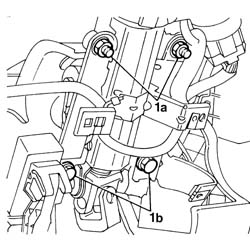
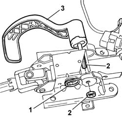

4110A21 STEERING WHEEL ADJUSTMENT DEVICE - R.R.
- Path
- Procedures > 41 STEERING UNIT > 4110 STEERING CONTROL AND LINKAGE > 4110A STEERING CONTROL > 4110A21 STEERING WHEEL ADJUSTMENT DEVICE - R.R.
- Kind
- repair procedure (removal / refitting; the operation number is the code)
- Applies to
- all engines; all production periods
- Interactive page
- https://sloeber94.github.io/elrnDB-fDct/en/#/244001162
Applies to: all engines; all production periods
 Removing
Removing
 Refitting
RefittingOp. 5580C18 AIR BAG MODULE - R+R
Op. 4110A10 STEERING WHEEL - R+R FOR REPLACEMENT OR CHECKS
Op. 7040A26 STEERING COLUMN TRIM - R+R
Op. 5550A12 COMPLETE STALK UNIT - R+R FOR VERSIONS WITH AIR BAG
Op. 7040A20 LEFT DASHBOARD LOWER TRIM - R.R.

Applies to: all engines; all production periods

Applies to: all engines; all production periods
Refitting
RemovingOp. 7040A20 LEFT DASHBOARD LOWER TRIM - R.R.
Op. 5550A12 COMPLETE STALK UNIT - R+R FOR VERSIONS WITH AIR BAG
Op. 7040A26 STEERING COLUMN TRIM - R+R
Topics linked from this page (5)
- 4110A10 STEERING WHEEL - R+R FOR REPLACEMENT OR CHECKS
- 5550A12 COMPLETE STALK UNIT - R+R FOR VERSIONS WITH AIR BAG
- 5580C18 AIR BAG MODULE - R+R
- 7040A20 LEFT DASHBOARD LOWER TRIM - R.R.
- 7040A26 STEERING COLUMN TRIM - R+R